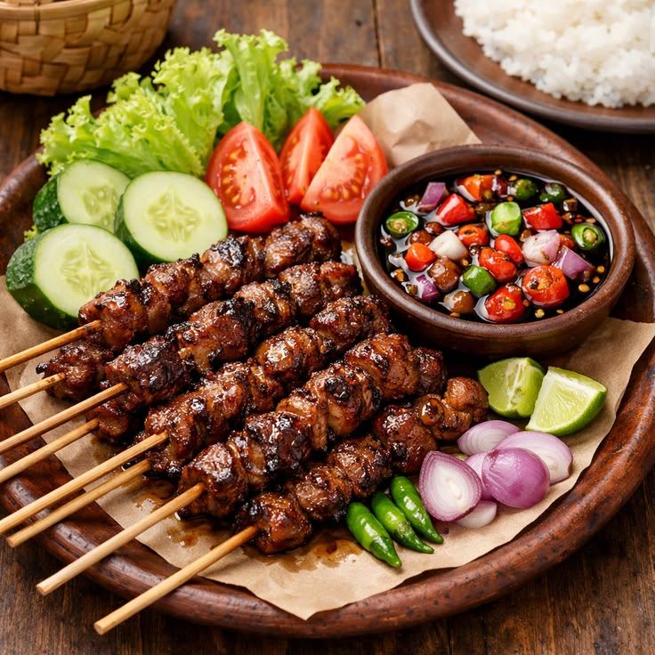
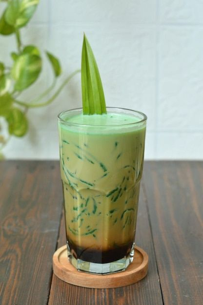

Pempek Palembang
Makanan khas Sumatera Selatan dari campuran ikan dan tepung sagu, disajikan dengan kuah cuko yang asam, manis, dan pedas.
Makanan khas Sumatera Selatan dari campuran ikan dan tepung sagu, disajikan dengan kuah cuko yang asam, manis, dan pedas.

Potongan daging ayam yang ditusuk bambu dan dibakar hingga matang, disajikan dengan bumbu kacang yang gurih dan saus kecap.

Mie kenyal dengan potongan ayam berbumbu gurih, sayuran, dan kuah kaldu yang lezat. Cocok sebagai makanan utama.

Perasan jeruk segar dengan es batu, rasanya asam manis dan menyegarkan.

Teh manis dingin yang pas menemani makan siang, terutama di cuaca panas.

Minuman tradisional berisi cendol dengan santan dan gula merah, manis dan segar.